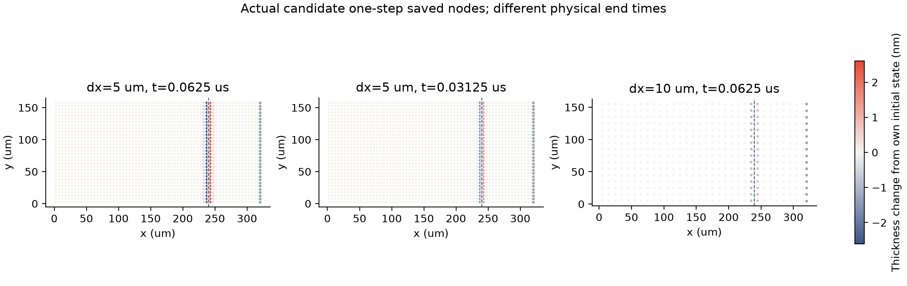
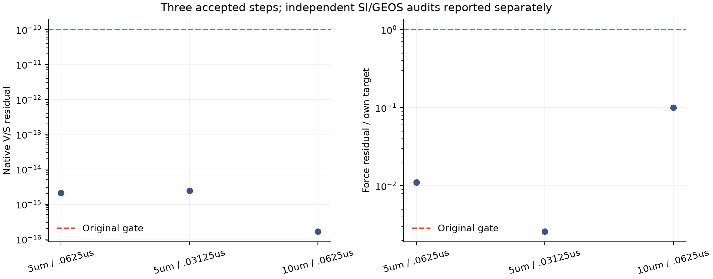

从几何反例，
走到实际算例的单步检查。
保留短边候选在三组真实参数算例中各推进一步；原生门槛、第一步输出对照、独立液量／表活审计及机械功审计均通过。
这是单步控制，不是完整动力学验收。没有重放原第78步失败，没有完成新的10微秒时间配对，也没有验收空间收敛或连续物理通量。
真实粒子发生了什么变化？

与旧数据的第一步相同吗？
| 网格／μm | 时间步／μs | 节点 | 比较列最大归一化差异 | 原生耗时 |
|---|---|---|---|---|
| 5 | 0.06250 | 2112 | 0.0e+00 | 55.03s |
| 5 | 0.03125 | 2112 | 0.0e+00 | 54.94s |
| 10 | 0.06250 | 544 | 0.0e+00 | 3.58s |
三组比较列的差异均为0。使用原有数值对照标准：离散结构精确一致，速度和面通量容差10⁻⁸，其余连续列10⁻¹⁰，位置用网格间距归一化。5微米参考来自旧单步算例，10微米参考只取旧160步轨迹保存的第一步。完整轨迹摘要不作对照，候选原生摘要另按原门槛检查。
本轮只执行候选；旧参考未重新计算。24项先前候选检查通过哈希复用，本页没有再次执行它们。
账本和机械功是否对得上？

这些是离散公式和单步一致性证据，不能证明所有拓扑变化附近的导数正确，也不能替代连续牵引力、实验或实际时间／空间收敛。原默认求解器、材料、容差和归档二进制均未修改。
下一步：同一候选实现下的参考配对
先计算候选的20／10微米参考算例并检查时间配对，再按结果决定5微米计算。不能把旧实现的粗时间步和候选实现的细时间步拼成合格配对。原10／50／200微秒、交换系数、薄膜元厚度比、整体条纹和保留工况实验仍待完成。
此前几何与24项检查 · 原失败现场。